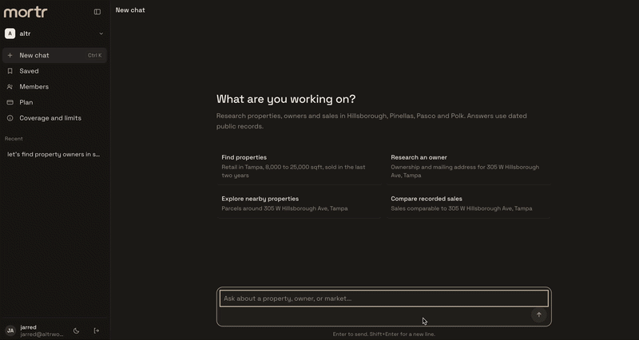
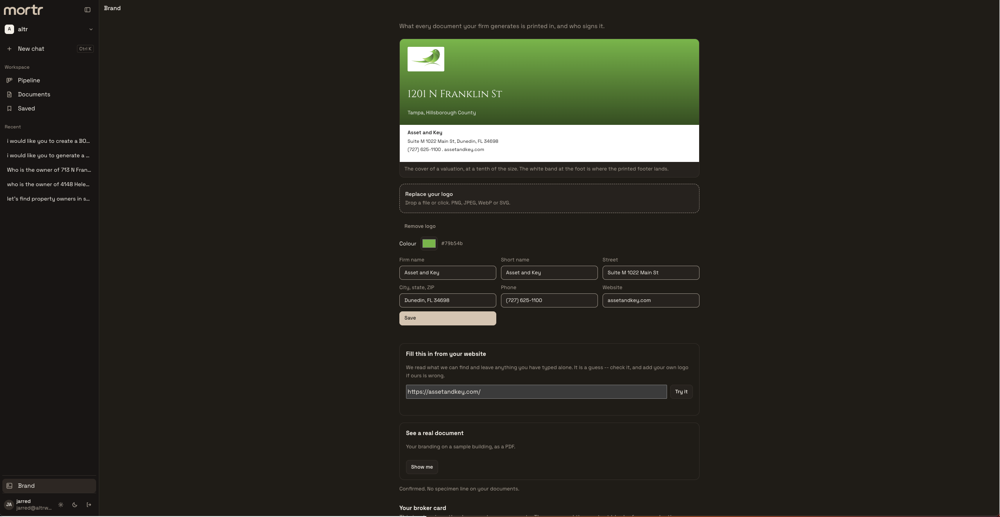
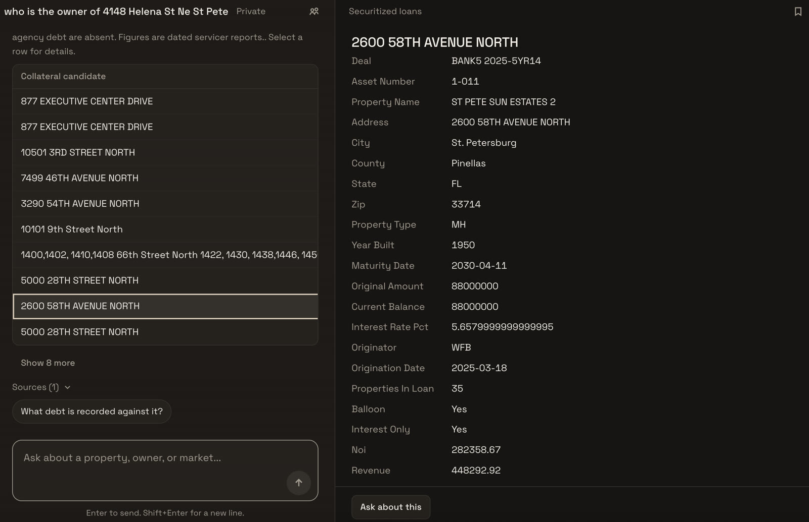

Property research, your CRM, and branded BOVs in one place.
mortr is a CRM for commercial real estate teams. Look up county property records, manage contacts and deals, and create broker opinions of value (BOVs) in your firm’s branding. New to BOVs? Read what a broker opinion of value is.
Property record coverage: Pinellas, Hillsborough, and Pasco counties, Florida.
Type an address. See who owns the property.
Ask mortr’s chat about an address and it answers from county property appraiser records for Pinellas, Hillsborough and Pasco: owner, mailing address, parcel ID and property details, without searching each county site. Property research uses dated public records, so every answer shows where it came from.

The research sits next to your CRM. Keep the people behind your opportunities as contacts, and track each deal through your pipeline with its stage, value, owner and next step, in a table or a board, from the first lead to a closed deal. The same property records and CRM can be added to Claude as a connector, so you can work from the assistant you already use (Claude connectors for CRE).
BOVs that look like your firm.
Save your logo, brand color and firm details once. Your broker card adds the name, photo and contact information used on the document. Then ask mortr to create a BOV for the property you are working on, preview the PDF in your branding, and review the property information and valuation before you share it. New to BOVs? Read what a broker opinion of value is.

For properties matched to securitized loan records, mortr also shows loan details alongside your research, including balances and maturity dates. Loan details come from dated servicer reports and may not include all debt on a property.

mortr is one part of our work for CRE teams. See the commercial real estate hub or the AI in Real Estate field guide.
Questions about mortr.
What is mortr?
mortr is a CRM for commercial real estate teams. It combines property record lookup, contacts, a deal pipeline, and broker opinion of value (BOV) generation in your firm’s branding.
Which counties does mortr cover?
Pinellas, Hillsborough, and Pasco counties, Florida.
Are the property records live?
Not minute by minute. mortr uses dated public records: parcel details come from the September 2026 county files, and sales results show the date of the file they came from. Deeds take weeks to be recorded, so the most recent month of sales always reads low. Check the county record before you rely on a figure in a BOV.
Does mortr show loan information?
For properties matched to securitized loan records, yes: balances and maturity dates appear alongside your research. Loan details come from dated servicer reports and may not include all debt on a property.
Can I use mortr inside Claude?
Yes. The same property records and CRM can be added to Claude as a connector. You sign in with your mortr account in a browser, with no API key to paste, and contacts, deals and documents saved from Claude appear in mortr.
See mortr in action.
We’ll walk you through property lookup, the CRM, and creating a BOV in your firm’s branding.